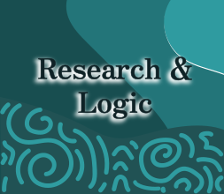
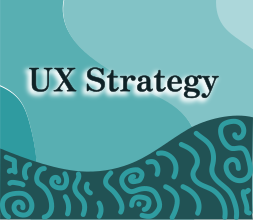
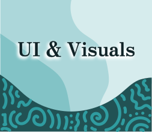
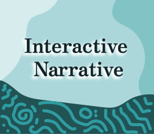
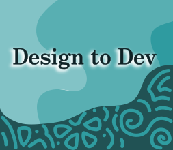
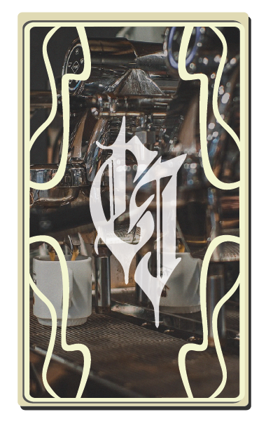
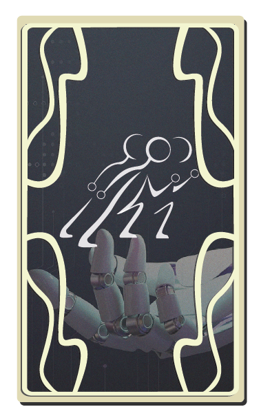
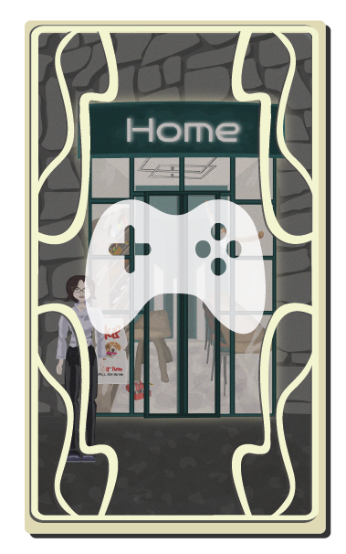

I'm Selene.
Psychology-driven immersion
UX/UI & Product Designer building scalable digital ecosystems that convert and refuse to be ignored.
I merge cognitive psychology with visual storytelling to eliminate friction and drive action. I reject the "one-size-fits-all" template to build products that stand out, scale, and move the needle.

The Craft & Gear
-

Creating user archetypes to optimize strategy. Converting complex data into product insights.
-

Defining scalable IA and product logic. Psychology design to maximize results.
-

Design system for consistency. Accessible interfaces with rigorous visual standards.
-

Custom visuals that breathe soul into digital products. Strategic copy to create story-driven flows.
-

HTML/CSS basics for design-to-dev handoff. Leveraging agentic stack to accelerate iteration cycles.
Strategic Path
I bridge the gap between business goals and user friction through systemic thinking.
-
Deep Discovery
Uncovering the "why" behind the "what." I analyze business objectives, technical constraints, and user behavior to define the true problem space.
-
Core Structure
Moving from data to structure. I design scalable information architectures and agentic workflows where every interaction serves a purpose.
-
Refinement
Validating assumptions through task-based testing and iterative loops. I refine the product based on performance data and WCAG accessibility standards.
Check how I apply it in my portfolio
Selected Works
-

Caffeinated InkConversion-driven website & admin system for a real coffee & tattoo business. -

Team AIProduct concept for a multi-agent AI workspace designed to accelerate workflows. -

Personal WebsiteA street, a character, a snake to shoot, and a full UX case study.